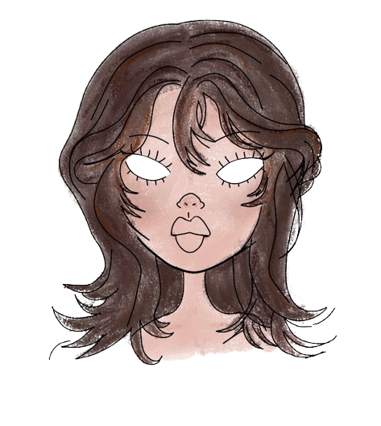

Etudiante en développement web (˶ᵔ ᵕ ᵔ˶)
J'apprends actuellement a créer des sites web intéractif et créatif!

Après 4 ans dans le domaine de la petite enfance, j'ai décidé de me reconvertir dans le développement web, un domaine qui me passionne depuis toujours. En 2024, j'ai décidé de quitter mon CDI et d'entrer en formation professionnelle pour devenir développeur web et web mobile. Je suis actuellement en 1ère année, afin d'aquérir des compétences front-end comme : HTML, CSS, JavaScript ect..
Je créer des petits et grands projets, que ce soit pour les cours ou en dehors. J'aime beaucoup le design et tout ce qui y touche, j'essaye toujours de l'intégrer comme je peux dans mes projets